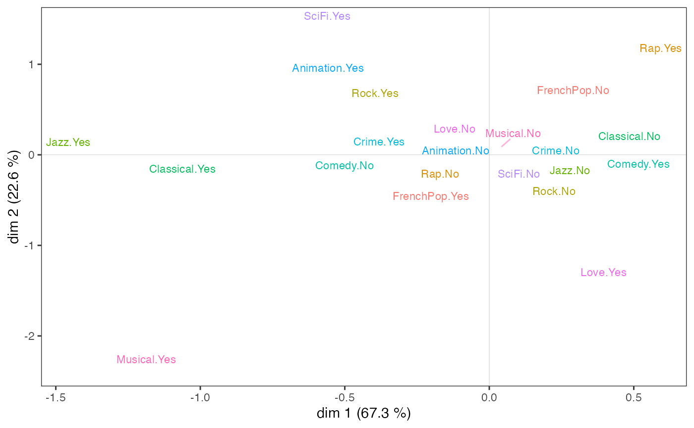
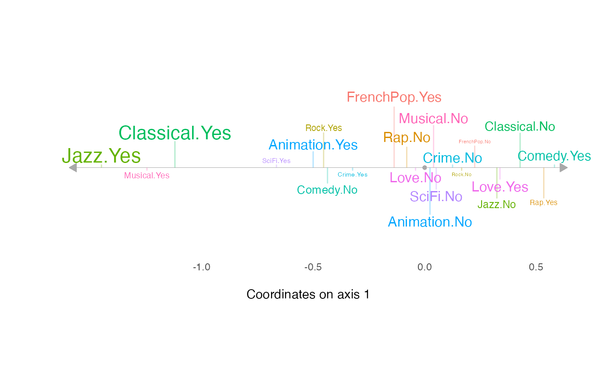
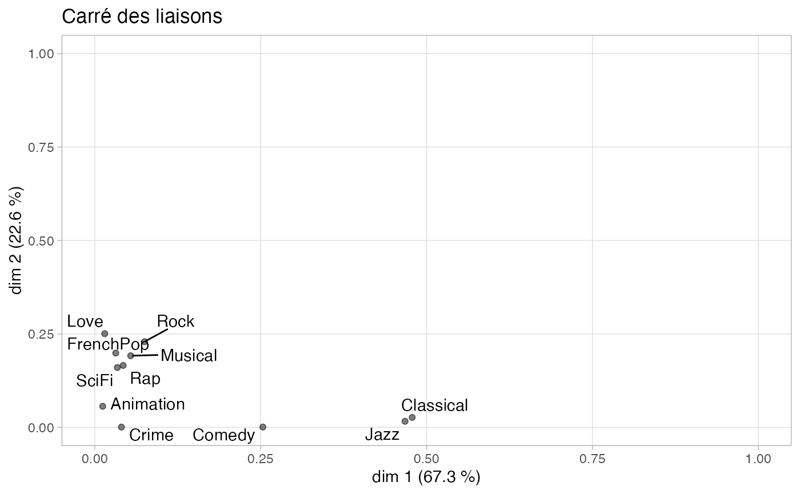
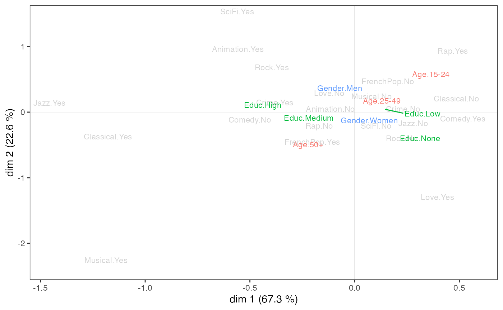
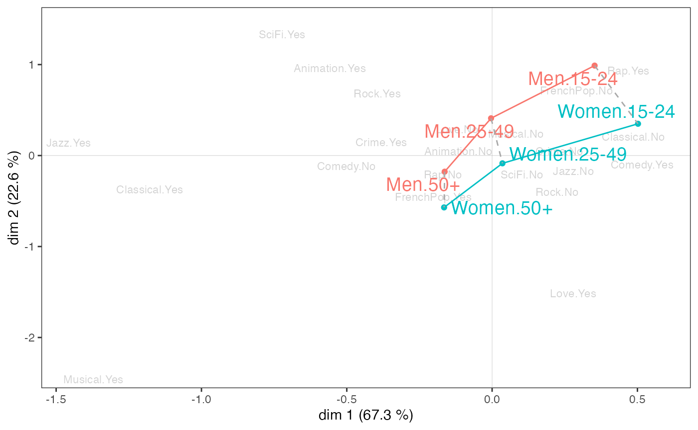
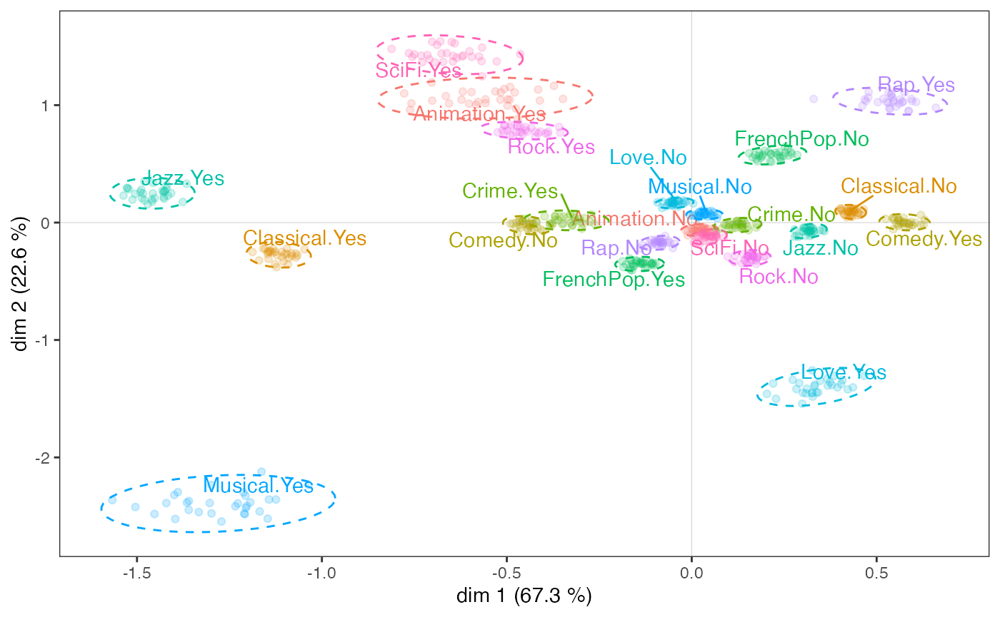
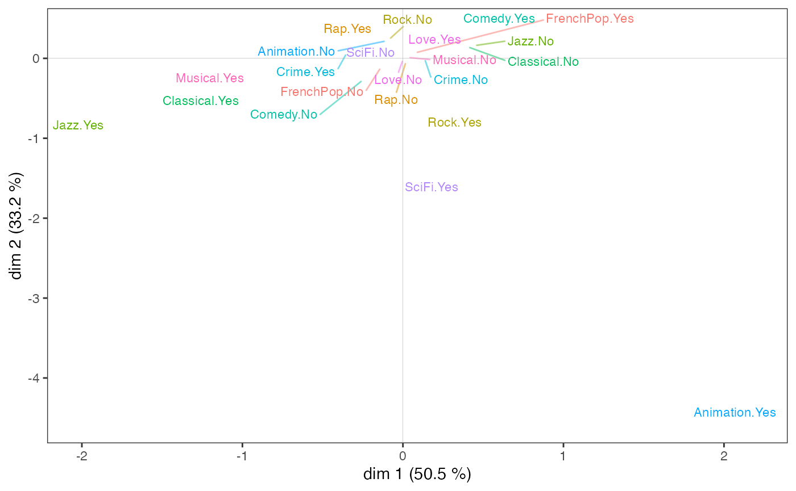
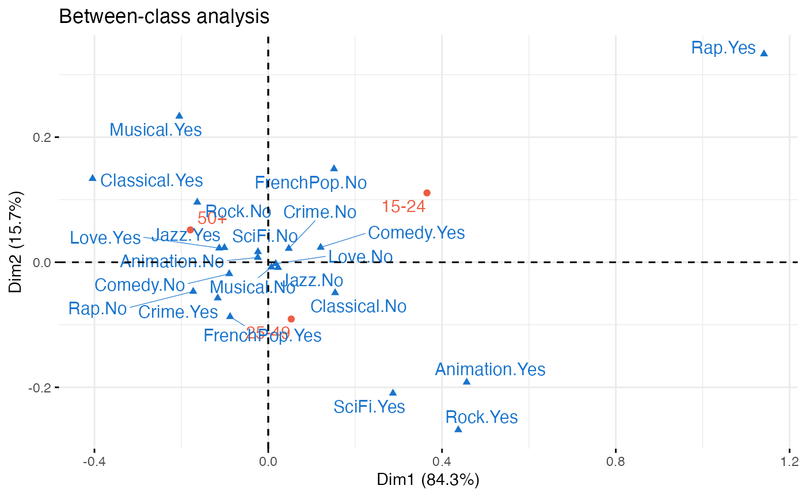
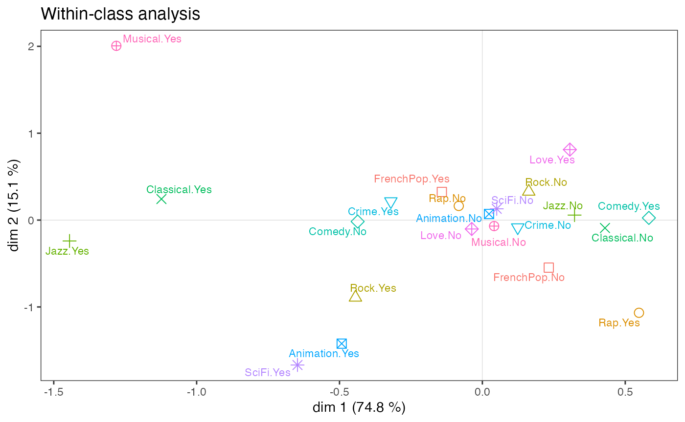
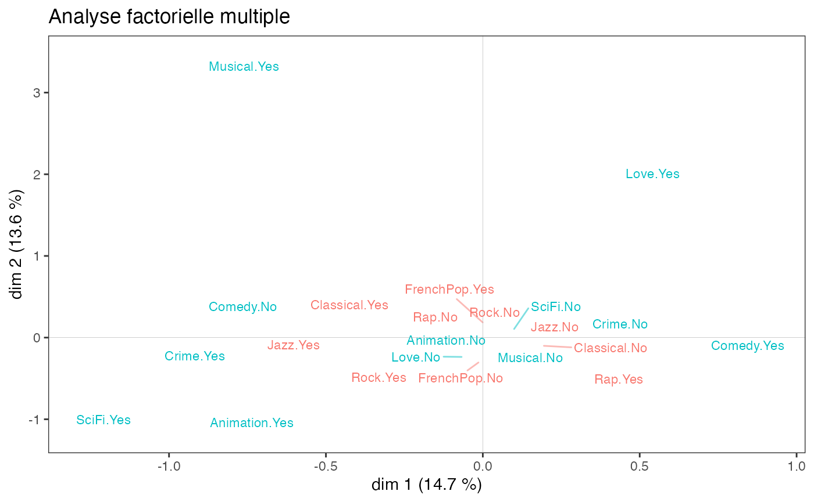

L’analyse géométrique des données avec GDAtools
Nicolas Robette
2023-04-19
Source:vignettes/articles/Tutoriel_AGD.Rmd
Tutoriel_AGD.Rmd
Ce tutoriel présente l’utilisation du package GDAtools pour l’analyse géométrique des données. Pour des approfondissements sur les procédures statistiques elles-mêmes, il est recommandé de se référer aux ouvrages référencés sur la page d’accueil du site.
Introduction
Pour cet exemple d’Analyse des Correspondances Multiples (ACM), nous allons utiliser l’un des jeux de données fournis avec le package. Il s’agit d’informations sur les goûts et les pratiques culturelles de 2000 individus : écoute de genres musicaux (variété française, rap, rock, jazz et classique) et goût pour des genres de films (comédie, film policier, animation, science-fiction, film d’amour, comédie musicale). Ces 11 variables serviront de variables “actives” dans l’ACM et sont complétées par 3 variables “supplémentaires” : le sexe, l’âge et le niveau d’éducation.
'data.frame': 2000 obs. of 14 variables:
$ FrenchPop: Factor w/ 3 levels "No","Yes","NA": 2 1 2 1 2 1 1 1 1 2 ...
$ Rap : Factor w/ 3 levels "No","Yes","NA": 1 1 1 1 1 1 1 1 1 1 ...
$ Rock : Factor w/ 3 levels "No","Yes","NA": 1 1 2 1 1 2 1 1 2 1 ...
$ Jazz : Factor w/ 3 levels "No","Yes","NA": 1 2 1 1 1 1 1 1 1 1 ...
$ Classical: Factor w/ 3 levels "No","Yes","NA": 1 2 1 2 1 1 1 1 1 1 ...
$ Comedy : Factor w/ 3 levels "No","Yes","NA": 1 2 1 1 1 1 2 2 2 2 ...
$ Crime : Factor w/ 3 levels "No","Yes","NA": 1 1 1 1 2 1 1 1 1 1 ...
$ Animation: Factor w/ 3 levels "No","Yes","NA": 1 1 1 1 1 1 1 1 1 1 ...
$ SciFi : Factor w/ 3 levels "No","Yes","NA": 2 1 1 1 1 2 1 1 1 1 ...
$ Love : Factor w/ 3 levels "No","Yes","NA": 1 1 2 1 1 1 1 1 1 1 ...
$ Musical : Factor w/ 3 levels "No","Yes","NA": 1 1 1 1 1 1 1 1 1 1 ...
$ Gender : Factor w/ 2 levels "Men","Women": 1 1 2 1 2 2 2 2 1 1 ...
$ Age : Factor w/ 3 levels "15-24","25-49",..: 2 3 2 3 2 2 2 2 1 3 ...
$ Educ : Factor w/ 4 levels "None","Low","Medium",..: 3 4 3 4 2 1 3 2 2 2 ...
Les variables actives ont toutes une modalité “non-réponse” (“NA”), qui concerne quelques individus.
summary(Taste[,1:11]) FrenchPop Rap Rock Jazz Classical Comedy Crime
No : 741 No :1730 No :1455 No :1621 No :1443 No :1141 No :1430
Yes:1249 Yes: 261 Yes: 535 Yes: 364 Yes: 552 Yes: 856 Yes: 555
NA : 10 NA : 9 NA : 10 NA : 15 NA : 5 NA : 3 NA : 15
Animation SciFi Love Musical
No :1905 No :1845 No :1768 No :1923
Yes: 91 Yes: 143 Yes: 225 Yes: 66
NA : 4 NA : 12 NA : 7 NA : 11
L’ACM spécifique permet de neutraliser ces modalités dans la construction de l’espace factoriel, tout en conservant l’ensemble des individus. On commence par repérer le rang des modalités que l’on souhaite neutraliser.
getindexcat(Taste[,1:11]) [1] "FrenchPop.No" "FrenchPop.Yes" "FrenchPop.NA" "Rap.No"
[5] "Rap.Yes" "Rap.NA" "Rock.No" "Rock.Yes"
[9] "Rock.NA" "Jazz.No" "Jazz.Yes" "Jazz.NA"
[13] "Classical.No" "Classical.Yes" "Classical.NA" "Comedy.No"
[17] "Comedy.Yes" "Comedy.NA" "Crime.No" "Crime.Yes"
[21] "Crime.NA" "Animation.No" "Animation.Yes" "Animation.NA"
[25] "SciFi.No" "SciFi.Yes" "SciFi.NA" "Love.No"
[29] "Love.Yes" "Love.NA" "Musical.No" "Musical.Yes"
[33] "Musical.NA"
Le vecteur de ces rangs est ensuite donné comme argument dans la fonction d’ACM spécifique speMCA().
Alternativement, on peut utiliser la liste des intitulés des modalités “poubelles”.
junk <- c("FrenchPop.NA", "Rap.NA", "Rock.NA", "Jazz.NA", "Classical.NA",
"Comedy.NA", "Crime.NA", "Animation.NA", "SciFi.NA", "Love.NA",
"Musical.NA")
mca <- speMCA(Taste[,1:11], excl = junk)Les intitulés de ces modalités peuvent être identifiés à l’aide de la fonction ijunk(), qui lance une application interactive prévue à cet effet et qui permet de copier-coller le code approprié.
Les nuages
Les taux d’inertie corrigés de Benzécri permettent de se faire une idée de la part d’information représentée par chacun des axes.
modif.rate(mca)$modif mrate cum.mrate
1 67.30532896 67.30533
2 22.64536000 89.95069
3 7.17043134 97.12112
4 2.26387669 99.38500
5 0.59232858 99.97733
6 0.02267443 100.00000On voit ici que les deux premiers axes capturent l’essentiel de l’information (près de 90 %). On va donc dans la suite se concentrer sur le plan formé par les axes 1 et 2.
Nuage des individus
Le nuage des individus ne présente pas de forme particulière (triangle, fer à cheval…), les points semblent répartis dans l’ensemble du plan (1,2).
ggcloud_indiv(mca)
Toutefois, dans certains cas, des points peuvent se superposer et la structure du nuage des individus n’est qu’imparfaitement rendue par un nuage de points. Il est alors possible de compléter le premier graphique par une représentation de la densité de points dans le plan. La fonction ggcloud_indiv() permet de le faire à l’aide de contours (à la manière des courbes de niveau d’une carte topographique) ou de surfaces hexagonales (colorées avec un gradient de couleur en fonction du nombre de points situés dans l’hexagone).
ggcloud_indiv(mca, col = "lightgray", density = "contour")
ggcloud_indiv(mca, density = "hex", hex.bin = 10)
Quelle que soit la représentation de la densité utilisée, on observe que les points semblent être plus concentrés dans une zone située immédiatement à droite de l’axe vertical.
NB : ggcloud_indiv() permet également d’afficher le nom des observations, lorsque cela présente un intérêt du point de vue de l’interprétation.
Nuage des variables
Sur le nuage des variables :
l’écoute de jazz et de musique classique et le goût des comédies musicales semblent s’opposer à l’écoute de rap et au goût pour les comédies sur l’axe 1 ;
le goût pour l’animation et la science-fiction à celui pour les films d’amour et les comédies musicales sur l’axe 2.
ggcloud_variables(mca, shapes = FALSE, legend = "none")
De nombreuses options sont possibles, notamment :
ajout de symboles (cercles, triangles, etc.) en plus des noms des modalités ;
sélection ou mise en valeur des modalités les plus importantes selon différents critères (contribution, qualité de représentation, typicalité, etc.) ;
utilisation de la taille, de l’italique, du gras et du soulignement pour identifier les modalités les plus importantes.
On représente traditionnellement les résultats dans un plan, c’est-à-dire en deux dimensions (ici les dimensions 1 et 2). Mais il est parfois plus simple de concentrer l’interprétation sur un seul axe à la fois, ce qui est possible avec la fonction ggaxis_variables() (paramétrée ici pour afficher les noms des modalités avec une taille proportionnelle à leur contribution à la construction de l’axe).
ggaxis_variables(mca, axis = 1, prop = "ctr")
Toutefois, l’interprétation du plan factoriel, pour être robuste, ne peut s’arrêter à un examen visuel du nuage des variables. Celui-ci doit être complété par l’analyse attentive d’indicateurs statistiques, en particulier des contributions des modalités à la construction des axes et de leur qualité de représentation.
Aides à l’interprétation
La plupart des aides à l’interprétation et autres informations utiles sont présentes dans l’objet créé par speMCA(). Le package propose plusieurs fonctions pour extraire et organiser ces informations.
contrib()présente les contributions des variables et des modalités de ces variables à la construction de chacun des axes et à celle du nuage.dimcontrib()extrait les contributions des individus et des modalités de variables à la construction d’un axe en particulier.dimdescr()identifie les variables et les modalités de variables les plus statistiquement associées aux différents axes. Les mesures d’association utilisées sont les rapports de corrélation (eta²) pour les variables et les coefficients de corrélation pour les modalités.planecontrib()extrait les contributions des individus et des modalités de variables à la construction d’un plan en particulier.
La fonction tabcontrib() permet, pour un axe donné, de synthétiser les principales contributions (par défaut, seules les contributions supérieures à la moyenne sont présentées).
tabcontrib(mca, dim = 1)| Variable | Category | Weight | Quality of representation | Contribution (left) | Contribution (right) | Total contribution | Cumulated contribution | Contribution of deviation | Proportion to variable |
|---|---|---|---|---|---|---|---|---|---|
| Classical | Yes | 552 | 0.478 | 23.08 | 31.88 | 31.88 | 31.88 | 100 | |
| No | 1443 | 0.474 | 8.8 | ||||||
| Jazz | Yes | 364 | 0.467 | 25.49 | 31.15 | 63.04 | 31.15 | 100 | |
| No | 1621 | 0.448 | 5.66 | ||||||
| Comedy | Yes | 856 | 0.253 | 9.66 | 16.88 | 79.92 | 16.88 | 100 | |
| No | 1141 | 0.252 | 7.22 |
Les variables d’écoute de musique classique et de jazz contribuent à elles seules pour plus de 60 % à la construction de l’axe 1. L’écoute de classique et de jazz s’oppose donc à leur non-écoute, et secondairement au goût pour les comédies.
tabcontrib(mca, dim = 2) | Variable | Category | Weight | Quality of representation | Contribution (left) | Contribution (right) | Total contribution | Cumulated contribution | Contribution of deviation | Proportion to variable |
|---|---|---|---|---|---|---|---|---|---|
| Rock | Yes | 535 | 0.229 | 12.99 | 17.77 | 17.77 | 17.77 | 100 | |
| No | 1455 | 0.226 | 4.78 | ||||||
| Love | Yes | 225 | 0.250 | 17.24 | 17.24 | 35 | 17.24 | 88.79 | |
| FrenchPop | No | 741 | 0.199 | 9.69 | 15.39 | 50.39 | 15.39 | 100 | |
| Yes | 1249 | 0.196 | 5.69 | ||||||
| Musical | Yes | 66 | 0.191 | 14.33 | 14.33 | 64.72 | 14.33 | 96.61 | |
| SciFi | Yes | 143 | 0.160 | 11.49 | 11.49 | 76.21 | 11.49 | 92.72 | |
| Rap | Yes | 261 | 0.164 | 11.05 | 11.05 | 87.27 | 11.05 | 86.56 |
Sur l’axe 2, l’écoute de rock et de rap et le goût pour les films de science-fiction s’opposent au goût pour les films d’amour et les comédies musicale et à l’écoute de variété française.
Une manière de synthétiser les relations entre les variables actives et les axes factoriels est le graphique appelé “carré des liaisons”, proposé par Escofier et Pagès (2008). Il utilise les rapports de corrélation pour représenter ces liaisons.
ggeta2_variables(mca) + ggtitle("Carré des liaisons")
On constate que l’écoute du jazz et de la musique classique est fortement corrélée avec l’axe 1 et pas du tout avec l’axe 2, et que les variables actives les plus corrélées avec l’axe 2 ne le sont que modérément.
Les facteurs structurants
Les variables supplémentaires
On peut aller plus loin en étudiant la relation entre l’espace factoriel et les variables supplémentaires, en l’occurrence le sexe, l’âge et le niveau d’éducation. Une première étape consiste à projeter les variables supplémentaires sur le nuage des variables.
vcloud <- ggcloud_variables(mca, shapes=FALSE, col="lightgray")
ggadd_supvars(vcloud, mca, Taste[,c("Gender","Age","Educ")])
Il est possible de paramétrer séparément l’affichage de chacune des variables supplémentaires avec la fonction ggadd_supvar() (sans “s”). Avec toutefois plusieurs contreparties : plus de lignes de code et risque de superposition des noms des modalités.
Le niveau d’éducation semble avant tout associé à l’axe 1, les plus diplômés étant du côté de l’écoute de jazz et de classique. Le sexe ne semble lié qu’à l’axe 2, avec les femmes dans le bas du plan et les hommes en haut. Quant à l’âge, il est associé aux deux axes : les individus se déplacent du quadrant nord-est au quadrant sud-ouest à mesure que leur âge augmente.
On peut confirmer statistiquement ces premières observations en mesurant le degré d’association entre les variables supplémentaires et les axes à l’aide du rapport de corrélation (eta²).
dim.1 dim.2
Gender 0.0 6.0
Age 3.8 14.2
Educ 5.9 3.3Le niveau d’éducation est la variable supplémentaire la plus associée à l’axe 1 : il “explique” 5,9 % de la variance des coordonnées individuelles sur cet axe. L’âge est également associé au premier axe, mais de manière moins marquée, et le sexe pas du tout.
Sur l’axe 2, l’âge est la variable la plus structurante, devant le sexe et le niveau d’éducation. On voit en outre que l’âge est nettement plus lié à l’axe 2 qu’à l’axe 1.
Au niveau des modalités, on peut caractériser l’association d’une modalité de variable supplémentaire avec un axe à partir des coefficients de corrélation.
| categories | mean.y.in.xcat | mean.y.global | sd.y.in.xcat | sd.y.global | cor |
|---|---|---|---|---|---|
| Age.15-24 | 0.156 | 0 | 0.355 | 0.369 | 0.176 |
| Educ.None | 0.094 | 0 | 0.324 | 0.369 | 0.145 |
| Educ.Low | 0.052 | 0 | 0.355 | 0.369 | 0.100 |
| Age.25-49 | 0.006 | 0 | 0.358 | 0.369 | 0.015 |
| Gender.Women | 0.004 | 0 | 0.370 | 0.369 | 0.012 |
| Gender.Men | -0.005 | 0 | 0.368 | 0.369 | -0.012 |
| Educ.Medium | -0.040 | 0 | 0.376 | 0.369 | -0.051 |
| Age.50+ | -0.061 | 0 | 0.369 | 0.369 | -0.142 |
| Educ.High | -0.141 | 0 | 0.382 | 0.369 | -0.213 |
Sur l’axe 1, les non et peu diplômés et les 15-24 ans s’opposent aux plus diplômés et aux 50 ans et plus. Les autres modalités apparaissent peu liées à l’axe (leurs coefficients de corrélation, dans la dernière colonne du tableau, sont proches de 0).
des$dim.2$categories| categories | mean.y.in.xcat | mean.y.global | sd.y.in.xcat | sd.y.global | cor |
|---|---|---|---|---|---|
| Age.15-24 | 0.236 | 0 | 0.320 | 0.342 | 0.288 |
| Gender.Men | 0.088 | 0 | 0.302 | 0.342 | 0.245 |
| Age.25-49 | 0.049 | 0 | 0.333 | 0.342 | 0.123 |
| Educ.High | 0.076 | 0 | 0.327 | 0.342 | 0.123 |
| Educ.Low | 0.016 | 0 | 0.341 | 0.342 | 0.034 |
| Educ.Medium | 0.007 | 0 | 0.335 | 0.342 | 0.009 |
| Educ.None | -0.100 | 0 | 0.341 | 0.342 | -0.167 |
| Gender.Women | -0.081 | 0 | 0.357 | 0.342 | -0.245 |
| Age.50+ | -0.131 | 0 | 0.299 | 0.342 | -0.330 |
Sur l’axe 2, les hommes, les moins de 50 ans et les plus diplômés s’opposent aux femmes, aux plus de 50 ans et aux sans diplôme.
Analyse d’une variable supplémentaire
Poursuivons l’analyse en nous concentrant sur une variable supplémentaire, le niveau d’éducation. La fonction supvar() fournit :
les coordonnées des modalités sur les axes,
leurs cosinus² (qui donnent la qualité de représentation d’une modalité sur un axe),
leurs dispersions (variances) sur les axes,
les rapports de corrélation (eta²) entre la variable et les axes,
les tests de typicalité (sur lesquels nous reviendrons dans la partie suivante),
les coefficients de corrélation entre les modalités et les axes.
supvar(mca, Taste$Educ)$weight
None Low Medium High
490 678 357 475
$coord
dim.1 dim.2 dim.3 dim.4 dim.5
None 0.254716 -0.293253 -0.191563 0.094510 -0.050520
Low 0.140147 0.046951 0.002259 -0.063613 -0.044181
Medium -0.109057 0.019669 0.054436 0.070183 -0.027962
High -0.380835 0.220714 0.153475 -0.059443 0.136194
$cos2
dim.1 dim.2 dim.3 dim.4 dim.5
None 0.021054 0.027906 0.011908 0.002899 0.000828
Low 0.010073 0.001131 0.000003 0.002075 0.001001
Medium 0.002584 0.000084 0.000644 0.001070 0.000170
High 0.045175 0.015173 0.007337 0.001101 0.005777
$var
dim.1 dim.2 dim.3 dim.4 dim.5
None 0.104915 0.116125 0.115232 0.103800 0.086031
Low 0.125921 0.116092 0.109029 0.087945 0.087735
Medium 0.141298 0.112505 0.097031 0.102449 0.094541
High 0.145983 0.107170 0.091066 0.106049 0.113352
within 0.128284 0.113341 0.104141 0.098718 0.094616
between 0.008061 0.003923 0.001598 0.000524 0.000555
total 0.136345 0.117264 0.105739 0.099242 0.095172
eta2 0.059123 0.033455 0.015115 0.005279 0.005832
$typic
dim.1 dim.2 dim.3 dim.4 dim.5
None 6.487410 -7.468929 -4.878958 2.407110 -1.286704
Low 4.487336 1.503312 0.072336 -2.036827 -1.414633
Medium -2.272883 0.409932 1.134503 1.462690 -0.582753
High -9.502876 5.507427 3.829615 -1.483270 3.398406
$pval
dim.1 dim.2 dim.3 dim.4 dim.5
None 0.000000 0.000000 0.000001 0.016079 0.198197
Low 0.000007 0.132758 0.942334 0.041667 0.157176
Medium 0.023033 0.681856 0.256584 0.143552 0.560059
High 0.000000 0.000000 0.000128 0.138003 0.000678
$cor
dim.1 dim.2 dim.3 dim.4 dim.5
None 0.145 -0.167 -0.109 0.054 -0.029
Low 0.100 0.034 0.002 -0.046 -0.032
Medium -0.051 0.009 0.025 0.033 -0.013
High -0.213 0.123 0.086 -0.033 0.076Graphiquement, on peut représenter le “sous-nuage” de chacune des modalités à l’aide d’une ellipse de concentration, qui est centrée sur le point moyen et englobe 86 % des individus ayant cette modalité.
icloud <- ggcloud_indiv(mca, col = "lightgrey")
ggadd_kellipses(icloud, mca, Taste$Educ, label = FALSE)
Même si, on l’a vu, les modalités du niveau d’éducation s’ordonnent le long de l’axe 1, les sous-nuages se superposent très largement, car l’association entre la variable et l’axe est modérée.
Observons maintenant plus spécifiquement le sous-nuage des individus les plus diplômés (la 4ème modalité de la variable Educ).
ggadd_kellipses(icloud, mca, Taste$Educ, sel = 4, legend = "none")Une ellipse de concentration est utile car elle représente conjointement le point moyen de la modalité et la dispersion du sous-nuage sur les axes. Ici, on voit que bien que le point moyen des individus les plus diplômés soit situé dans le quadrant nord-ouest, une part non négligeable des points du sous-nuage se trouve à droite et/ou en bas du plan.
Les ellipses de concentration ne donnent en revanche qu’une représentation imparfaite de la répartition des points du sous-nuage, du fait de l’éventuelle superposition des points (de manière analogue à ce qu’on a vu pour le nuage des individus) et son centrage sur le point moyen. Il peut dès lors être intéressant de compléter une ellipse de concentration par une représentation de la densité des points du sous-nuage, sous forme de contours ou de surfaces.
ggadd_density(icloud, mca, var = Taste$Educ, cat = "High", density = "contour")
ggadd_density(icloud, mca, var = Taste$Educ, cat = "High", density = "area", ellipse = TRUE)On voit ici qu’il semble y avoir une concentration d’individus très diplômés immédiatement à droite de l’axe vertical, dans une zone qui correspond aussi à une concentration de points du nuage des individus (voir plus haut).
Un pas supplémentaire dans l’analyse consiste à neutraliser l’influence de la répartition des points du nuage des individus sur celle du sous-nuage, en se demandant dans quelles parties du plan les plus diplômés sont sur/sous-représentés. Dans le graphique suivant, on représente dans chaque tuile hexagonale la proportion d’individus très diplômés, centrée par rapport à la proportion d’individus très diplômés dans l’ensemble de l’échantillon. Autrement dit on représente la sur/sous-représentation d’individus très diplômés dans chaque portion du plan. Le graphique est rendu plus lisible par une procédure de lissage issue de l’analyse spatiale en géographie (inverse distance weighting).
ggsmoothed_supvar(mca, var = Taste$Educ, cat = "High", center = TRUE)Les individus les plus diplômés sont sur-représentés dans l’ensemble du quadrant nord-ouest, mais également parmi les plus à l’ouest du quadrant sud-ouest.
Interaction entre deux variables supplémentaires
On peut également étudier les interactions entre plusieurs variables supplémentaires, par exemple ici entre le sexe et l’âge.
ggadd_interaction(vcloud, mca, Taste$Gender, Taste$Age, legend = "none")
Le sexe et l’âge semblent peu interagir dans le plan 1-2. On remarque toutefois que, sur l’axe 1, les écarts entre les plus jeunes et les plus âgés sont plus importants chez les femmes que chez les hommes et que, sur l’axe 2, les jeunes se différencient plus selon le sexe que les plus âgés.
NB : Les analyses effectuées ici sur des variables supplémentaires sont réalisables de manière analogue pour des individus supplémentaires, à l’aide des fonctions supind() et ggadd_supind(). Cela présente un intérêt lorsque certains individus ont été écartés de l’ACM parce que trop atypiques ou que certaines informations manquaient, par exemple.
Analyse inductive
Si on souhaite évaluer la généralisabilité des résultats, on peut compléter les analyses descriptives qui précèdent par des procédures d’inférence statistique qui empruntent à l’analyse inductive des données et aux approches combinatoires (pour cette partie plus encore que pour les autres, on renvoie à Le Roux et Rouanet, 2004 & 2010).
Le problème de la typicalité consiste à se demander si un groupe d’individus peut être assimilé à la population de référence ou s’il est atypique. Un test de typicalité calcule une p-value combinatoire, qui définit le “degré de typicalité” du point moyen du groupe d’individus. Une p-value faible est considérée comme statistiquement significative au sens combinatoire et traduit une différence qui n’est probablement pas due au hasard.
dimtypicality(mca, Taste[, c("Gender","Age","Educ")], dim = c(1,2))$dim.1
weight test.stat p.value
Age.15-24 297 7.890052 0.00000
Educ.None 490 6.487410 0.00000
Educ.Low 678 4.487336 0.00001
Age.25-49 849 0.669142 0.50340
Gender.Women 1042 0.543265 0.58695
Gender.Men 958 -0.543265 0.58695
Educ.Medium 357 -2.272883 0.02303
Age.50+ 854 -6.340738 0.00000
Educ.High 475 -9.502876 0.00000
$dim.2
weight test.stat p.value
Age.15-24 297 12.875430 0.00000
Gender.Men 958 10.972527 0.00000
Age.25-49 849 5.520379 0.00000
Educ.High 475 5.507427 0.00000
Educ.Low 678 1.503312 0.13276
Educ.Medium 357 0.409932 0.68186
Educ.None 490 -7.468929 0.00000
Gender.Women 1042 -10.972527 0.00000
Age.50+ 854 -14.772247 0.00000A un seuil de 5 %, les points moyens des femmes, hommes et âges intermédiaires ne sont pas significativement différents de celui de l’ensemble de la population sur l’axe 1 (autrement dit de 0). Sur l’axe 2, ce sont les points moyens des niveaux d’éducation faibles et moyens qui ne s’écartent pas significativement de l’origine.
On peut étudier les résultats des tests de typicalité d’une variable supplémentaire en particulier à partir de la fonction supvar().
dim.1 dim.2
None 0.000000 0.000000
Low 0.000007 0.132758
Medium 0.023033 0.681856
High 0.000000 0.000000On voit que, sur l’axe 1, toutes les modalités de niveau d’éducation sont significativement différentes de 0 à un seuil de 5 %, elles sont atypiques du nuage de l’ensemble des individus, mais que ce n’est pas le cas des modalités “Low” et “Medium” sur l’axe 2.
Les ellipses de confiance répondent à la même logique que les tests de typicalité. Avec un seuil de significativité conventionnel de 5 %, l’ellipse de confiance est une zone de confiance à 95 % représentant, pour une modalité, l’ensemble des points moyens possibles qui ne sont pas significativement différents du point moyen observé.
# p <- ggcloud_indiv(mca, col='lightgrey')
ggadd_ellipses(icloud, mca, Taste$Educ, level = 0.05, label = FALSE)On retrouve ici graphiquement les résultats obtenus avec les tests de typicalité.
Un test d’homogénéité est une procédure combinatoire qui vise à comparer plusieurs groupes d’individus. La question que l’on se pose est de savoir si, sur un axe donné, les positions de deux groupes d’individus sont significativement distinctes (i.e. si les p-values sont toutes très proches de 0). Les groupes correspondent aux différentes modalités d’une variable.
ht <- homog.test(mca, Taste$Educ)
round(ht$dim.1$p.values, 3) None Low Medium High
None 1 0 0 0
Low 0 1 0 0
Medium 0 0 1 0
High 0 0 0 1Sur l’axe 1, les points moyens des modalités de niveau d’éducation sont toutes significativement distinctes les unes des autres.
round(ht$dim.2$p.values, 3) None Low Medium High
None 1 0.000 0.000 0
Low 0 1.000 0.223 0
Medium 0 0.223 1.000 0
High 0 0.000 0.000 1Ce n’est pas le cas sur l’axe 2, où les modalités “Low” et “Medium” ne se distinguent pas significativement (p-value = 0,22).
Validation interne
Le manque de robustesse des ACM, ou l’absence de moyens de mesurer cette robustesse, est parfois présenté comme l’une des faiblesses de l’analyse géométrique des données. Ces critiques ne sont guère pertinentes, notamment du fait qu’il existe des techniques de “validation interne” des résultats des ACM. Ludovic Lebart (2006 ; 2007) a ainsi proposé de s’appuyer sur le bootstrap, i.e. le rééchantillonnage par tirage aléatoire avec remise. Cette approche présente l’avantage d’être non-paramétrique, i.e. de ne reposer sur aucune des hypothèses probabilistes de l’inférence fréquentiste.
Lebart proposer plusieurs méthodes. Le bootstrap total utilise de nouvelles ACM calculées à partir de réplications bootstrap des données initiales.
Dans le bootstrap total de type 1, le signe des coordonnées est corrigé si nécessaire (la direction des axes d’une ACM étant arbitraire).
Dans le type 2, l’ordre des axes et le signe des coordonnées sont corrigés si nécessaire.
Dans le type 3, une rotation procustéenne est utilisée pour trouver la meilleure superposition entre les axes initiaux et les axes répliqués.
Le bootstrap partiel, quant à lui, ne calcule pas de nouvelle ACM : il projette des réplications bootstrap des données initiales comme éléments supplémentaires de l’ACM. Il donne une vision plus optimiste (ou moins exigeante) de la stabilité des résultats que le bootstrap total.
Ci-dessous, les résultats d’un bootstrap partiel (avec 30 réplications, nombre considéré comme généralement suffisant par Lebart) sont représentés à l’aide d’ellipses de confiance. On constate que si les points des réplications bootstrap de quelques modalités sont relativement dispersés, ce n’est le cas que de modalités éloignées de l’origine du plan et ne modifie en rien l’interprétation des résultats de l’ACM : ceux-ci sont tout à fait robustes.
ggbootvalid_variables(mca, type = "partial", K = 30) + theme(legend.position = "none")
Il est possible de mener le même type d’analyses pour des variables supplémentaires avec la fonction ggbootvalid_supvars(), et d’obtenir les résultats des calculs de réplications bootstrap (sans représentation graphique) avec les fonctions bootvalid_variables() et bootvalid_supvars().
ACM et classification
L’ACM et les techniques de classification automatique sont souvent utilisées conjointement. Par exemple, après avoir représenté les données par des plans factoriels, on peut souhaiter obtenir un résumé sous la forme d’une typologie, autrement dit regrouper les individus qui se ressemblent. On peut pour cela s’appuyer sur les données d’origine ou sur les coordonnées des individus dans le nuage de l’ACM.
On réalise ici une Classification Ascendante Hiérarchique (CAH) à partir des coordonnées des individus dans le plan factoriel (1,2), puis une partition en 3 classe.
On peut ensuite utiliser la partition ainsi créée pour de nouvelles analyses, par exemple en la croisant avec des variables supplémentaires, ou plus simplement représenter les sous-nuages d’individus correspondant aux classes de la typologie, à l’aide d’enveloppes convexes. Une enveloppe convexe est le polygone convexe le plus petit parmi ceux qui contiennent un ensemble de points. Dans le contexte de l’ACM, les enveloppes convexes sont une représentation graphique intéressante surtout si les sous-nuages représentés sont relativement peu superposés, comme c’est le cas ici.
ggadd_chulls(icloud, mca, cluster)Quelques remarques :
La fonction
quadrant()crée également une typologie des individus, de manière plus simple : chaque individu est classé selon la partie du plan (le “quadrant”) où il se situe (nord-ouest, nord-est, sud-est, sud-ouest).Il existe de nombreuses mesures de distances / ressemblances. Dans l’exemple ci-dessus, on a utilisé la distance euclidienne entre les coordonnées des individus. Si on réalise une classification automatique à partir des variables d’origine de l’ACM, il est cohérent d’employer la distance du chi-2, celle qui est utilisée par les analyses des correspondances, ce qui est possible avec la fonction
dist.chi2().La fonction
ahc.plots()propose quelques représentations graphiques qui donnent des indications pour le choix du nombre de classes à partir des résultats d’une CAH.Si la CAH est la technique de classification automatique la plus répandue en analyse géométrique des données, il en existe de nombreuses autres (voir par exemple le package
cluster).
Variantes de l’ACM
Class Specific Analysis
La Class Specific Analysis (CSA) est un prolongement de l’ACM qui permet d’étudier un sous-nuage d’individus en prenant conjointement en compte la distribution des variables dans le sous-nuage et dans l’ensemble du nuage. Il s’agit donc de tenir compte du fait que la structure du sous-nuage n’existe pas in abstracto mais en relation avec le nuage dans lequel il s’inscrit.
On illustre ici la CSA à partir du sous-nuage des individus les plus diplômés.
ggcloud_variables(csa, shapes = FALSE, legend = "none")
tabcontrib(csa, dim = 1)| Variable | Category | Weight | Quality of representation | Contribution (left) | Contribution (right) | Total contribution | Cumulated contribution | Contribution of deviation | Proportion to variable |
|---|---|---|---|---|---|---|---|---|---|
| Jazz | Yes | 145 | 0.629 | 41.85 | 51.08 | 51.08 | 17.25 | 33.76 | |
| No | 326 | 0.608 | 9.23 | ||||||
| Classical | Yes | 183 | 0.363 | 17.79 | 24.55 | 75.63 | 6.9 | 28.1 | |
| No | 290 | 0.359 | 6.76 | ||||||
| Animation | Yes | 34 | 0.149 | 12.43 | 12.43 | 88.06 | 4.64 | 35.66 |
On voit que, comme dans l’ACM, l’écoute de jazz et de musique classique structurent l’axe 1, mais cette fois beaucoup plus fortement puisque ces deux variables contribuent à elles seules pour 75 % à la construction de l’axe.
tabcontrib(csa, dim = 2)| Variable | Category | Weight | Quality of representation | Contribution (left) | Contribution (right) | Total contribution | Cumulated contribution | Contribution of deviation | Proportion to variable |
|---|---|---|---|---|---|---|---|---|---|
| Animation | Yes | 34 | 0.651 | 59.05 | 59.05 | 59.05 | 22.06 | 35.66 | |
| SciFi | Yes | 38 | 0.149 | 9.51 | 9.51 | 68.55 | 2.53 | 24.72 | |
| Rock | Yes | 203 | 0.118 | 6.71 | 6.71 | 75.26 | 2.55 | 27.32 | |
| Jazz | Yes | 145 | 0.075 | 5.43 | 5.43 | 80.69 | 2.16 | 32.22 |
C’est avant tout le goût pour les films d’animation qui contribue à la construction de l’axe 2.
En somme, le sous-nuage des variables des plus diplômés présente des points communs avec celui de l’ensemble de la population, mais aussi quelques spécificités très marquées.
La ressemblance entre l’ACM portant sur l’ensemble des individus et la CSA sur les individus les plus diplômés peut être mesurée en étudiant les angles entre les axes des deux analyses, avec la fonction angles.csa().
angles.csa(csa, mca)$cosines
mca.dim1 mca.dim2 mca.dim3 mca.dim4 mca.dim5 mca.dim1&2 mca.dim1&3
csa.dim1 0.772 0.157 -0.051 0.415 0.486 0.787 0.773
csa.dim2 0.553 -0.481 -0.063 -0.511 -0.535 0.733 0.557
csa.dim3 -0.017 -0.680 -0.059 0.010 0.480 0.680 0.061
csa.dim4 0.223 0.182 0.385 -0.482 0.179 0.287 0.445
csa.dim5 -0.181 -0.296 -0.298 -0.350 0.154 0.347 0.348
mca.dim1&4 mca.dim1&5 mca.dim2&3 mca.dim2&4 mca.dim2&5 mca.dim3&4
csa.dim1 0.876 0.912 0.165 0.444 0.511 0.418
csa.dim2 0.753 0.770 0.485 0.702 0.719 0.515
csa.dim3 0.020 0.480 0.682 0.680 0.832 0.059
csa.dim4 0.531 0.286 0.426 0.515 0.256 0.617
csa.dim5 0.394 0.238 0.420 0.458 0.334 0.459
mca.dim3&5 mca.dim4&5
csa.dim1 0.489 0.639
csa.dim2 0.539 0.740
csa.dim3 0.483 0.480
csa.dim4 0.425 0.515
csa.dim5 0.335 0.382
$angles
mca.dim1 mca.dim2 mca.dim3 mca.dim4 mca.dim5 mca.dim1&2 mca.dim1&3
csa.dim1 39.5 81.0 87.1 65.5 60.9 38.1 39.4
csa.dim2 56.4 61.3 86.4 59.3 57.7 42.9 56.2
csa.dim3 89.0 47.2 86.6 89.4 61.3 47.2 86.5
csa.dim4 77.1 79.5 67.3 61.2 79.7 73.3 63.6
csa.dim5 79.6 72.8 72.7 69.5 81.2 69.7 69.6
mca.dim1&4 mca.dim1&5 mca.dim2&3 mca.dim2&4 mca.dim2&5 mca.dim3&4
csa.dim1 28.8 24.2 80.5 63.7 59.3 65.3
csa.dim2 41.1 39.7 61.0 45.4 44.0 59.0
csa.dim3 88.9 61.3 47.0 47.2 33.7 86.6
csa.dim4 57.9 73.4 64.8 59.0 75.2 51.9
csa.dim5 66.8 76.3 65.2 62.7 70.5 62.7
mca.dim3&5 mca.dim4&5
csa.dim1 60.7 50.2
csa.dim2 57.4 42.3
csa.dim3 61.1 61.3
csa.dim4 64.9 59.0
csa.dim5 70.4 67.5On voit que la première dimension de la CSA est nettement corrélée à la première dimension de l’ACM (et très peu à la dimension 2), mais que la deuxième dimension de la CSA se distingue assez nettement des deux premières dimensions de l’ACM.
On n’ira pas plus loin ici mais précisons que toutes les techniques de visualisation et d’interprétation décrites précédemment peuvent s’appliquer aux résultats d’une CSA.
Analyses discriminantes
L’approche par variables instrumentales constitue une forme de rapprochement entre l’analyse géométrique des données et les méthodes de régression. En pratique, il s’agit de construire un espace factoriel, à partir d’un premier groupe de variables actives, de manière à ce que cet espace “explique” au mieux un second ensemble de variables, dites variables instrumentales. On parle ici d’expliquer dans un sens analogue aux analyses de variance (anova) ou de régression, dans lesquelles une variable explicative “explique” une variable à expliquer, i.e. rend compte le mieux possible de sa variance.
Dans le cas général, il y a plusieurs variables instrumentales, qui peuvent être catégorielles et/ou numériques. Lorsque les variables actives sont toutes numériques, on parle d’Analyse en Composantes Principales sur Variables Instrumentales (fonction PCAiv()), et lorsque les variables actives sont toutes catégorielles, d’Analyse des Correspondances sur Variables Instrumentales (fonction MCAiv()).
Si la variable instrumentale est unique et catégorielle, on peut dire qu’elle partitionne les individus en groupes ou “classes”. Il s’agit donc de faire une analyse inter-classes, en construisant un espace factoriel qui rend compte des différences entre classes (fonctions bcPCA() pour les cas où les variables actives sont continues et bcMCA() pour ceux où elles sont catégorielles). On parle aussi parfois d’analyse discriminante barycentrique ou d’analyse des correspondances discriminantes. Si les variables actives sont continues, une variante est l’analyse factorielle discriminante (AFD), dite aussi analyse discriminante descriptive (fonction DA()), qui est équivalente à l’analyse discriminante linéaire dans la littérature anglo-saxonne. Lorsque les variables actives sont catégorielles, une adaptation de l’AFD a été proposée par Gilbert Saporta (1977) sous le nom de Disqual (fonction DAQ()).
En guise d’exemple, on applique une analyse discriminante barycentrique pour construire l’espace factoriel des différences de goûts entre les individus des différentes catégories d’âge.
between <- bcMCA(Taste[,1:11], class = Taste$Age, excl = junk)
factoextra::fviz_ca(between, repel = TRUE, invisible = "row.sup",
col.col = "dodgerblue3", col.row = "tomato2", title = "Between-class analysis")
between$ratio[1] 0.04077871Le premier axe, ou “facteur discriminant”, ordonne les catégories d’âge et oppose notamment l’écoute de rap et de rock et le goût pour la science-fiction, du côté des jeunes, à l’écoute de musique classique et au goût pour les comédies musicales, du côté des plus de 50 ans. Mais beaucoup de modalités de goûts sont proches du centre de l’axe 1 et sont donc peu différenciées selon l’âge. Les différences d’âge ne rendent d’ailleurs compte que de 4% de l’inertie totale du nuage.
Analyses conditionnelles
Les analyses conditionnelles constituent une autre tentative d’intégration de l’analyse géométrique des données et de la régression. Leur principe consiste à contraindre les axes de l’ACM à être indépendants (i.e. orthogonaux) d’une ou plusieurs variables supplémentaires, c’est-à-dire à construire une ACM “toute chose (de ces variables supplémentaires) égale par ailleurs” (Bry et al, 2016). La comparaison des résultats de l’ACM originelle et de ceux de l’ACM conditionnelle est un moyen d’étudier les effets de structure.
Dans le cas général, il y a plusieurs variables dont il faut “éliminer l’effet” et celles-ci sont parfois appelées variables instrumentales orthogonales. On réalisera donc une Analyse en Composantes Principales sur Variables Instrumentales Orthogonales si les variables actives sont toutes numériques (fonction PCAoiv()) et une Analyse des Correspondances sur Variables Instrumentales Orthogonales si les variables actives sont toutes catégorielles (fonction MCAoiv()).
Comme pour les analyses discriminantes (sous-partie précédente), si la variable instrumentale orthogonale est unique et catégorielle, elle partitionne les individus en “classes”. Mais on est cette fois dans le cadre d’une analyse intra-classes : il s’agit de construire l’espace factoriel rendant compte des structures communes aux différentes classes. Lorsque les variables actives sont catégorielles, on réalise une ACM conditionnelle (Escofier, 1990 et fonction wcMCA()), dont l’ACM standardisée (Bry et al, 2016) est une alternative (fonction stMCA()). L’approche conditionnelle s’applique aussi au cas de variables actives numériques (fonction wcPCA()).
On construit maintenant l’espace des goûts communs aux femmes et aux hommes, ou, dit autrement, en neutralisant les différences sexuées. Dans le plan (1,2), les résultats obtenus sont très proches de ceux de l’ACM spécifique. La principale différence concerne le goût (très féminin) pour les films d’amour, qui ne se distingue plus sur l’axe 2.
La faible ampleur des différences entre les deux analyses est confirmée par le fait que l’analyse intra-classes rend compte de près de 99% de l’inertie totale du nuage.
within <- wcMCA(Taste[,1:11], class = Taste$Gender, excl = junk)
ggcloud_variables(within, legend = "none") + ggtitle("Within-class analysis")
within$ratio[1] 0.9896936Analyses multi-tableaux (symétriques)
Un autre cas de figure se présente quand les variables actives sont réparties en plusieurs groupes homogènes et que ces groupes jouent un rôle symétrique (contrairement aux approches avec variables instrumentales).
Avec deux groupes de variables, on peut réaliser une analyse de co-inertie (Tucker, 1958 ; Dolédec et Chessel, 1994) afin d’étudier les structures communes aux deux groupes (fonctions coiMCA() si les groupes sont composés de variables catégorielles, coiPCA() s’ils sont composés de variables numériques).
On applique une analyse de co-inertie à un nouveau jeu de données, dans lequel un groupe de 5 variables décrit les goûts pour différents genres musicaux, et un second groupe de 2 variables décrit la fréquence d’écoute (en général ou “focalisée”, c’est-à-dire en ne faisant rien d’autre).
data(Music)
Xa <- Music[,1:5] # music tastes
Xb <- Music[,8:9] # frequency of listening
coin <- coiMCA(Xa, Xb,
excl.a = c("FrenchPop.NA","Rap.NA","Rock.NA","Jazz.NA","Classical.NA"))
factoextra::fviz_ca(coin, repel = TRUE, title = "Co-inertia analysis",
col.col = "dodgerblue3", col.row = "tomato2")L’examen du premier axe montre que le rap, le jazz et le rock sont du côté de l’écoute quotidienne et d’une écoute focalisée fréquente ou quotidienne, alors que le goût pour la musique populaire française est du côté d’une écoute non-quotidienne et de l’absence d’écoute focalisée.
L’Analyse Factorielle Multiple (AFM, voir Escofier et Pagès, 1994) permet de traiter deux groupes de variables ou plus. Elle prend en compte à la fois les structures propres à chacun des groupes et les structures communes aux groupes. La fonction multiMCA() permet de réaliser des AFM en utilisant des ACM spécifiques ou des Class Specific Analysis.
Ici, on reprend les données Taste. Un groupe de variables décrit l’écoute de genres musicaux et l’autre le goût pour des genres de films, et l’AFM utilise des ACM spécifiques.
mca1 <- speMCA(Taste[,1:5], excl = c(3,6,9,12,15))
mca2 <- speMCA(Taste[,6:11], excl = c(3,6,9,12,15,18))
mfa <- multiMCA(list(mca1,mca2))
ggcloud_variables(mfa, shapes=FALSE, legend="none") + ggtitle("Analyse factorielle multiple")
On observe que ce sont surtout les variables cinématographiques qui structurent le plan (1,2). Une AFM ne présente guère d’intérêt ici, car les deux espaces sont très peu liés : le coefficient RV est de 1,4% (le coefficient RV - fonction rvcoef() - est une sorte de coefficient de corrélation entre les groupes de variables).
rvcoef(mca1$ind$coord, mca2$ind$coord)[1] 0.01412768NB : Il existe une autre approche pour traiter les cas de plusieurs groupes de variables, que ces groupes jouent un rôle symétrique ou non, c’est l’approche PLS (Partial Least Square, voir Tenenhaus, 1998). La plupart de ces techniques sont disponibles dans le package plsdepot, développé par Gaston Sanchez.
Analyse des correspondances non-symétriques
Lorsqu’un tableau de contingence présente une structure de dépendance, c’est-à-dire lorsque le rôle des deux variables n’est pas symétrique mais que, au contraire, l’une peut être considérée comme prédisant l’autre, l’analyse des correspondances non symétrique peut être utilisée pour représenter la structure prédictive du tableau et évaluer le pouvoir prédictif de la variable prédictive.
Techniquement, l’analyse des correspondances non symétrique est très similaire à l’analyse des correspondances standard, la principale différence étant que les colonnes du tableau de contingence ne sont pas pondérées par leur rareté (c’est-à-dire par l’inverse des fréquences marginales).
On étudie ici des données sur la répartition de diverses tâches domestiques dans les couples. On considère que le type de tâche domestique est prédicteur de qui réalise cette tâche.
Wife Alternating Husband Jointly
Laundry 156 14 2 4
Main_meal 124 20 5 4
Dinner 77 11 7 13
Breakfeast 82 36 15 7
Tidying 53 11 1 57
Dishes 32 24 4 53
Shopping 33 23 9 55
Official 12 46 23 15
Driving 10 51 75 3
Finances 13 13 21 66
Insurance 8 1 53 77
Repairs 0 3 160 2
Holidays 0 1 6 153Les biplots d’une analyse des correspondances non symétrique reflètent la structure de dépendance du tableau de contingence et ne doivent donc pas être interprétés comme les plans d’une analyse des correspondances standard. Un premier principe est que le graphique affiche les profils-lignes centrés. Un deuxième principe est que les relations entre les lignes et les colonnes sont contenues dans leurs produits scalaires : les lignes sont représentées sous forme de vecteurs, également appelés facteurs du biplot, et les colonnes sont projetées sur ces vecteurs. Si certaines colonnes ont des projections sur le vecteur-ligne très éloignées de l’origine, la ligne présente une augmentation relativement importante de la prévisibilité et son profil s’écarte considérablement du profil marginal, en particulier pour cette colonne.
Pour des conseils plus détaillés sur l’interprétation, voir Kroonenberg et Lombardo (1999, pp.377-378).
nsca <- nsCA(housetasks)
nsca.biplot(nsca)
nsca$GK.tau[1] 0.4067139On constate le fait de savoir que les tâches domestiques concernent la lessive ou la préparation des repas “augmente les performances de prédiction” de tâches féminines. Les réparations sont associées aux tâches masculines et l’organisation des vacances aux tâches conjointes.
Le tau de Goodman et Kruskal est une mesure d’association globale asymétrique. Sa valeur élevée (0,41) indique ici que le type de tâche domestique prédit bien qui réalise la tâche.
Quelques points pratiques
Liens avec d’autres packages
Les variantes de l’ACM et de l’ACP proposées dans GDAtools sont, autant que possible, prévues pour créer des objets similaires à ceux créés par les fonctions PCA(), MCA() et CA() du package FactoMineR. Cela permet à ces objets d’être (le plus souvent) compatibles avec un certain nombre de fonctionnalités d’interprétation et de visualisation des résultats :
les fonctions graphiques du package
FactoMineR,le package
Factoshinypour la construction interactive de graphiques,le formidable package
explor, développé par Julien Barnier, pour l’exploration interactive des résultats,le package
factoextrapour extraire et visualiser les résultats.
Gestion des couleurs
La plupart des fonctions de représentations graphiques de GDAtools ont été conçues avec la “grammaire” (et les palettes de couleurs par défaut) de ggplot2 et de manière à pouvoir personnaliser les couleurs de manière très flexible. On peut en effet utiliser les fonctions de type scale_color_*, comme scale_color_grey() pour les niveaux de gris, scale_color_brewer() pour les palettes ColorBrewer, scale_color_manual() pour utiliser des palettes personnalisées, ou encore paletteer::scale_color_paletteer_d() du package paletteer pour accéder à un grand nombre de palettes de couleurs existant dans R (dont une liste est accessible ici). Il faut toutefois veiller à choisir une palette disposant d’au moins autant de couleurs qu’il y a de variables à représenter (faute de quoi certaines variables resteront invisibles).
Par exemple, pour afficher le nuage des variables avec la palette ColorBrewer “Paired1”, on procédera ainsi.
ggcloud_variables(mca) + scale_color_brewer(palette = "Paired")